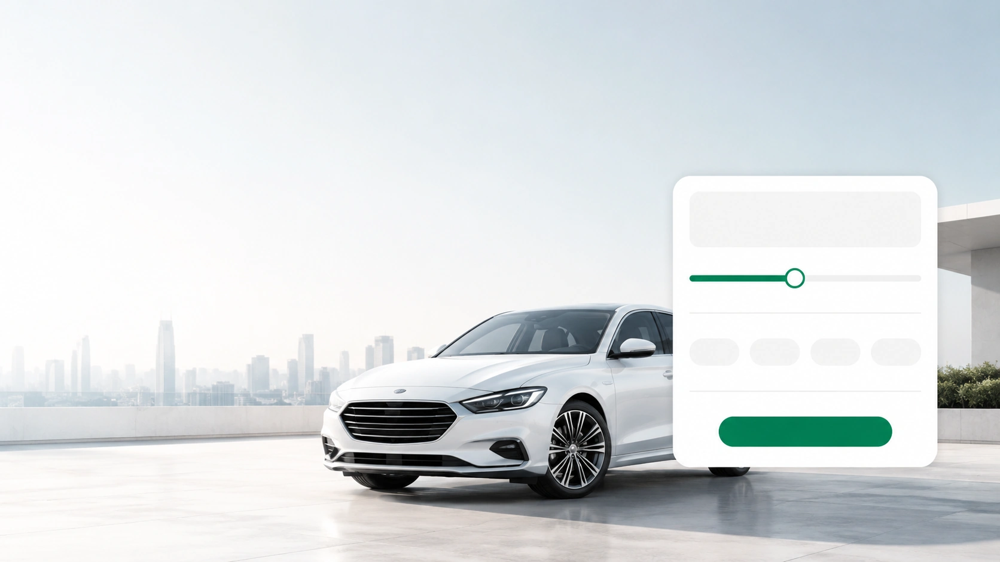
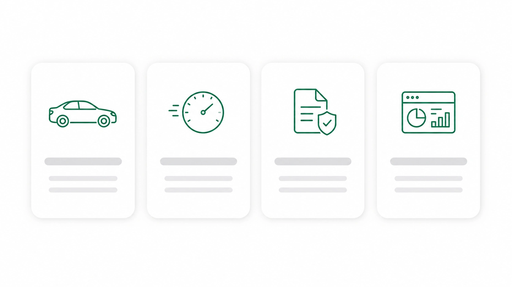
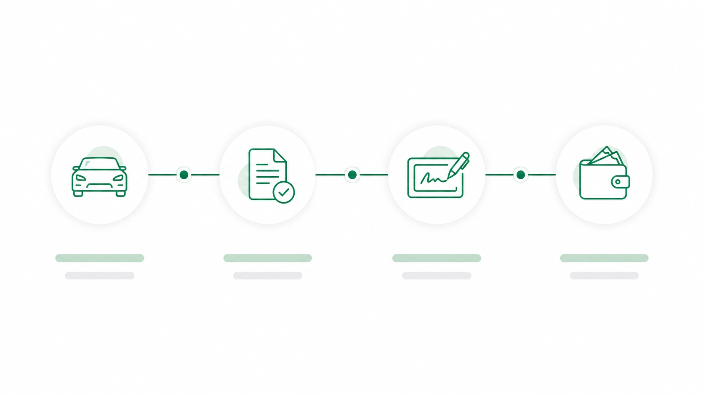
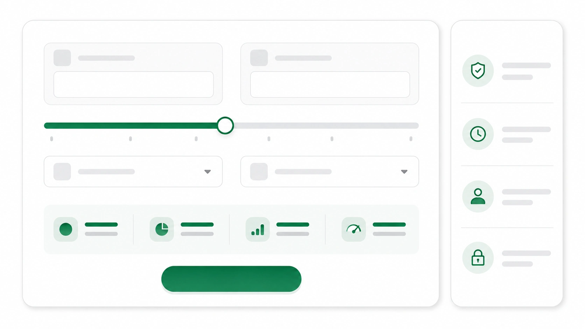
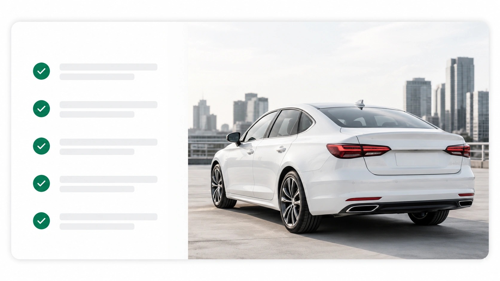
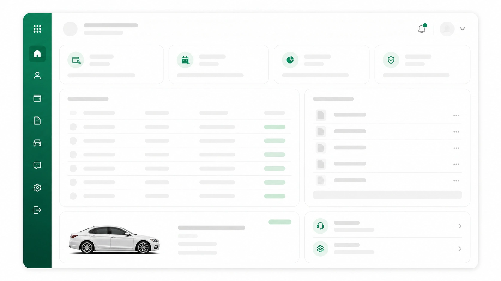
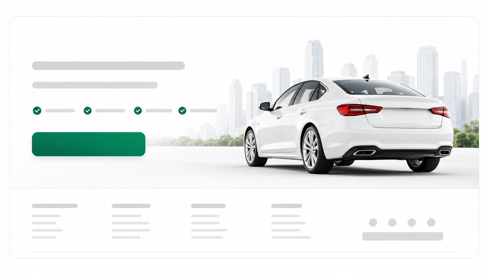

Texty a CTA doplňujte ve webu přes HTML/CSS. Níže je doporučené pořadí a použití assetů.
Soubor: assets_webp/01_hero_visual_no_text.webp
Kam dát: Homepage úplně nahoře pod navigaci.
Použití: Použít jako hlavní hero vizuál. Vlevo nechat text a CTA v HTML/CSS, vpravo je auto a abstraktní kalkulační karta.
Desktop: width: 100%; max-width: 1440px; aspect-ratio: 16/9; object-fit: cover;
Mobile: Oříznout na střed auta a UI kartu, případně použít jako background s gradientem. Text v mobilu vždy nad obrázkem.

Soubor: assets_webp/02_benefit_cards_no_text.webp
Kam dát: Hned pod hero sekci.
Použití: Grafický podklad pro 4 výhody. Nad/pod karty vložit skutečné texty přes HTML.
Desktop: 4 sloupce; asset může být vložen jako ilustrační grafika nebo rozřezán na jednotlivé karty.
Mobile: Karty skládat 2×2 nebo pod sebe.

Soubor: assets_webp/03_process_steps_no_text.webp
Kam dát: Pod sekci Výhody.
Použití: Horizontální proces 4 kroků. Skutečné popisky vložit v HTML/CSS.
Desktop: Použít přes celou šířku sekce.
Mobile: Na mobilu převést do vertikální timeline, obrázek lze použít jako doplňkový vizuál.

Soubor: assets_webp/04_audience_cards_no_text.webp
Kam dát: Pod proces nebo před kalkulačku.
Použití: 4 segmenty cílových skupin. Doplnit titulky OSVČ, malé firmy, řemeslníci, podnikatelé v HTML.
Desktop: 4 karty v jednom řádku.
Mobile: 2×2 nebo jeden sloupec.
Soubor: assets_webp/05_calculator_ui_no_text.webp
Kam dát: Střed landing page jako hlavní konverzní blok.
Použití: Vizuální podklad kalkulačky bez textů. Doporučuji skutečnou interaktivní kalkulačku kódovat v HTML/Reactu a tento asset použít jako referenční mockup nebo background.
Desktop: 2 sloupce: vlevo vysvětlení, vpravo kalkulačka.
Mobile: Kalkulačku skládat do jednoho sloupce.

Soubor: assets_webp/06_benefits_split_car_no_text.webp
Kam dát: Pod kalkulačku.
Použití: Split layout: vlevo benefit checklist, vpravo auto. Skutečný text vložit přes HTML.
Desktop: 50/50 split layout.
Mobile: Nejdřív text, potom obrázek auta.

Soubor: assets_webp/07_client_portal_ui_no_text.webp
Kam dát: Pod sekci Proč AutoKapitál nebo jako samostatný produktový blok.
Použití: Ukázka klientského dashboardu bez textů. Přes asset doplnit popisky okolo, samotný UI mockup může zůstat bez textu.
Desktop: Vložit jako screenshot/mockup portálu.
Mobile: Zmenšit, dát do carouselu nebo zobrazit jen hlavní část dashboardu.

Soubor: assets_webp/08_footer_cta_no_text.webp
Kam dát: Úplný spodek homepage.
Použití: Závěrečný CTA banner s autem a abstraktní patičkou. Doplnit finální claim, CTA a odkazy v HTML.
Desktop: Široký CTA banner nad footerem.
Mobile: Nejdříve CTA text a tlačítko, potom auto/obrázek, footer pod sebe.
